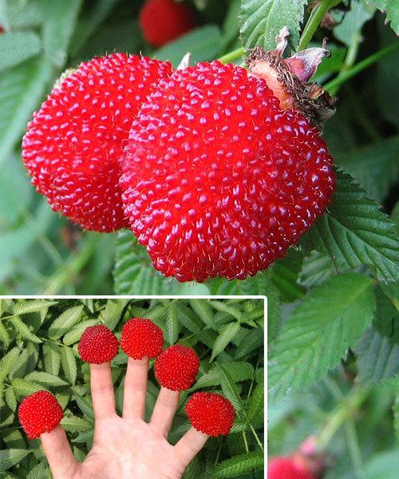

Что такое розолистная малина?
Розолистная малина — это сорт малины, отличающийся нежными, ароматными ягодами и декоративными листьями.
Характеристики
- Высокая устойчивость к болезням
- Большой урожай
- Отличные вкусовые качества ягод
- Декоративные листья
Уход за растением
Розолистная малина требует регулярного полива и подкормки. Также важно обрезать кусты для лучшего урожая.